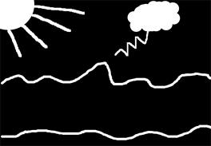
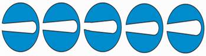

1. Беттің толық макетін баптау
2. Объектілер диспетчер терезесі
Макет құру – бұл дизайнердің ойын жүзеге асыру үшін беттің және макет элементтерінің (мәтіннің, растрлік және векторлық бейнелердің) орналасу параметрлерін баптау. Жаңа құжат құрғанда CorelDraw автоматты түрде А4 (210х297 мм) форматын орнатады. Форматты өзгерту керек болса, ашылатын форматтар тізімінен керекті форматты таңдау керек немесе қасиеттер палитрасында тиісті өріске қажетті көлемді орнату керек. Беттің макетін толық баптау үшін Tools > Options командасын орындап, Document > Page бетін ашамыз. Бұл бетте 4 пункт бар:
1. Size (көлем) – бұл пункте беттің параметрін баптауға болады. Алдын ала құру терезесінде енгізілген өзгертулерді байқауға болады.
2. Logout (макет) – бұл пункте ашылатын Logout тізім көмегімен 6 шаблонның біреуін таңдауға болады :
· Full Page (толық бет)
· Book (кітап)
· Book Let (буклет)
· Tent Card (Открытка)
· Side Fold (карточка с боковым сгибом)
· Top Fold Card (карточка с верхним сгибом)
Макеттің өзгеруі алдын ала көру терезесінде бейнеленеді. Facing Page (айналық беттер) туын екі жақты басылым үшін қолданады.
Start on тізімі (начать с ...) бірінші беттің номері жұп немесе тақ болатынын анықтайды.
3. Label (наклейки) компакт дискімен бірге болатын 800 – ден астам стандартты наклейкалар пакетінен наклейканы таңдауға мүмкіндік береді. Егер де керекті нұсқа жоқ болса, Customize Label бөлуді баптау батырмасына шертіп, ашылған сұхбат терезесінде бөлу параметрлерін болады.
4. Background (фон) – бқл пункт беттің фонын таңдауға мүмкіндік береді. Ауыстырғыштар көмегімен 3 нұсқаны таңдауға болады.
· No Background (фон жоқ)
· Solid (бір түсті фон)
· Bitmap (растрлік форматтағы бейне).
Print and Export Background туы фонды экспорттауға және қағазға шығаруға мүмкіндік береді. Егер ту орналатылмаса, онда фон экранда көрінеді де, қағазға басылмайды және экспорттағанда сақталмайды.
Object Manager (объектілер диспетчері) терезесін қолдану. Күрделі құжаттармен жұмыс істегенде объектілер арасында ыңғайлы түрде ауысу үшін Object Manager терезесі қолданылады. Бұл терезеде иерархия түрінде құжаттағы бар барлық беттер, қабаттар және объектілер орналасады. Бұл терезе көмегімен қабаттағы объектілердің орналасуын өзгертуге болады. Объектілерді ерекшелеуге, топтастыруға, көшірмесін алуға және де контурдың түсін өзгертуге мүмкіндік бар. Бұл терезені ашу үшін Window > Docker > Object Manager командасын орындау керек. Object Manager терезесінде ерекшеленген объект жұмыс аймағында да ерекшеленеді. Үнсіз келісім бойынша әрбір қабат (Laуer) реттік номер жазуымен белгіленеді. Қолданушы қабаттың атауын өзгерте алады. Ол үшін қабаттың атауының үстінен екі рет шерту керек.
Қабаттың атауының сол жағындағы көздің белгішесі осы қабаттағы орналасқан объектілерді көрінбеуіне әсер етеді. Принтер белгішесі осы қабатта орналасқан объектілерді қағазға басуға рұқсат етеді немесе тыйым салады. Қарындаш белгісі осы қабатта орналасқан объектілерді өңдеуге рұқсат етеді немесе тыйым салады. Терезеде құжат туралы қандай ақпарат көрсетілетінін анықтау үшін және құжатты өңдеу үшін келесі басқару элементтері қолданылады.
Show Object Property (объектінің қасиетін көрсету) - объектінің атауының қасында объект туралы ақпарат жазылады (контурдың түсі және қалыңдығы, құюдың түсі).
Edit Across Layer қабаттар арасында өңдеу, терезеде қай қабат ерекшеленгеніне байланыссыз кез – келген қабаттағы объектіні өңдеуге мүмкіндік береді.
Layer Manager View (түрлер диспетчері) – бұл режимді қолданғанда терезеде тек қабаттар ғана көрсетіледі.
New Layer - жаңа бос қабат құрады
New Master Layer - бұл жаңа шаблон бет құрайды.
Delete – ерекшеленген қабат, объект немесе объектілер тобын жояды.
Объектіні бір қабаттан екінші қабатқа ауыстыру немесе көшірмесін алу үшін терезе менюінің Move to Layer немесе Copy to Layer командаларын орындауға болады.
Объектілерді туралау және бекіту
Snap to Grid кнопкасы бойынша объектілерді тор бойынша туралау режимі іске қосылады. Тордың параметрлерін баптау үшін Tools > Options командасын орындап, Document Grid терезесінде баптауға болады. Freguency (жиілік, частота) – көлденеңінен және тігінен өлшем бірлігіне келетін тор сызықтарының жиілігін орнатады. Spacing (арақашықтық) – тордың қадамы. Show Grid (торды көрсету) – торды көрсету немесе алып тастау. Snap to Grid (торды бекіту) – торды сызықтарға бекіту. Show Grid as Lines ( тор сызықтарын пунктермен көрсету). Show Grid Dots (тор сызықтарын нүктемен көрсету)
Жоғары сапалы құжат құру үшін, жұмысты тез және жоғары деңгейде жүргізу үшін белгілі ережелерді сақтау керек. Күрделі құжаттардың макетін құру үшін келесі кеңестерді орындаған жөн.
1. Құжатты жоспарлау – яғни, бейне қай мақсатпен құрылады және соңғы нәтиже қандай болады екенін анықтау.
2. Эскиз құру – жұмыстың алдында қағазға графиканың және мәтін элементтерінің орналасуын көрсетіп алу.
3. Шаблон дайындау – бұл объектілерді туралауды жеңілдету.
4. Құжатты құру.
5. Алдын ала қағазға шығарып, нәтижені көру.
6. Құжатты қағазға немесе плёнкаға шығару.
Бақылау сұрақтары:

Боялған шеңбер салып, 8 рет көшірмесін алыңыз. Smudge сайманы арқылы шеңберлердің формасын төмендегідей түрге келтіріңіз:
